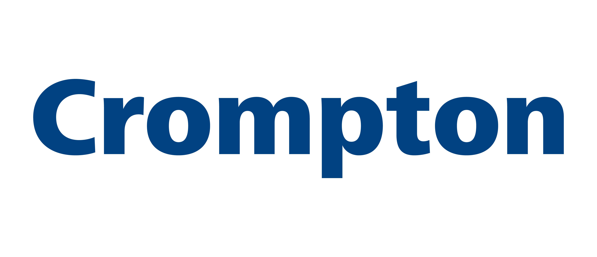

Education
Vellore Institute of Technology, School of Computer Science and Engineering
MTech Integrated Computer Science with specialization in Business Analytics
CGPA - 9.03
Chennai | October 2020 - June 2025
Skills
Programming Languages
- Python
- SQL
- R
Frameworks & Libraries
- PyTorch
- OpenCV
- Hugging Face
- Pandas
- Numpy
- Matplotlib
- Seaborn
- Streamlit
Technologies
- Deep Learning
- Natural Language Processing (NLP)
- Computer Vision
- Large Language Models (LLMs)
- Retrieval-Augmented Generation (RAG)
- Fine-Tuning
- NoSQL
- Agentic AI
Experience

Crompton Greaves Consumer Electricals Limited
Data Analyst (Internship)
Mumbai | Jan 2025 - Present
- Leading the adoption of NexusAI, Crompton's in-house Al platform, now used by 3000+ employees, including leadership.
- Improving business workflows by 20% through machine learning model integration, use case definition, and system optimization.
- Developing AI tools using Retrieval-Augmented Generation (RAG) to enhance document retrieval, reducing search times by 50% and increasing productivity.
- Contributing to the development of HR Policy Assist and document query systems, improving self-service rates by 35% and automating internal processes.
- Collaborating on factory automation using YOLOv9 to detect missing components in packaging, contributing to quality control.
- Working with large datasets to extract insights that support data-driven decision-making across teams.
Sprouts AI
Data Analyst (Internship)
Bangalore | May 2023 - August 2023
- Improved clients' marketing strategies, resulting in a 35% increase in audience reach through data-driven insights.
- Engineered an automated data extraction process using Apollo CRM, enabling seamless delivery of 5000+ verified contact details to clients monthly, facilitating targeted outreach and boosting their lead conversion rates by 40%.
Mega Lifesciences
SEO team (Internship)
Mumbai | May 2022 - July 2022
- Supported the SEO team by researching and recommending keywords for the newly launched website 'Good Health by Yourself', leading to a 400% increase in web traffic within a short period.
- Gained hands-on experience with Semrush and Ahrefs to identify high-impact, relevant keywords across 9+ countries, enhancing the website's global search visibility and content relevance.
Projects
OncoCutisAI: Hybrid Skin Cancer Detection using Metadata and Dermoscopic Images
Deep Learning
- Achieved 98.72% accuracy by developing OncoCutisAI, a hybrid diagnostic model combining 17 metadata features and 10,000+ augmented dermoscopic images using ensemble learning with Swin-Tiny, MobileViT, and XGBoost.
- Preprocessed data for 1,373 patients, using MICE to impute 15% missing values and applying 5 augmentations per image to enhance deep learning model generalization.
- Benchmarked multiple architectures (ResNet, Efficient Net, MobileNet) and ensemble techniques (majority voting, weighted averaging) to optimize performance and reliability.
Automated Essay Grading System with Plagiarism Detection
Natural Language Processing
- Developed an automated essay grading system using Bi-LSTM architecture, achieving 96% accuracy in grading cohesion, syntax, and vocabulary for essays by English learners (Grades 8-12).
- Incorporated BERT for plagiarism detection by computing a similarity index, comparing essays to detect potential copying.
Nivaaran: AI-Powered Flood Risk Assessment System
Computer Vision
- Developed Nivaaran for SIH Hackathon, a smartphone app that integrates Instagram and Twitter APIs to collect real-time data on water concerns.
- Applied MobileNet for flood image detection with an accuracy of 93%, enhancing its capabilities to effectively address water-related issues in communities.
- Integrated the model into the app to detect flooded areas, classify water-related issues from social media images, and assess flood risk for timely disaster response.
Publications
Automated essay grading system for IELTS using Bi-LSTM - Springer Link
A Review on the Movie Recommendation System Using Big Data - International Research Journal on Advanced Science Hub